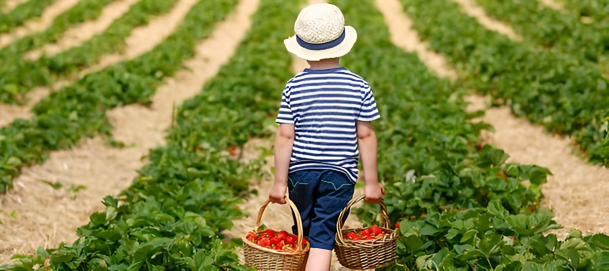

Como parte del compromiso de Hortatech con el impacto social, se llevan a cabo campañas de concienciación sobre el valor del agua en la Huerta de Valencia. Estas campañas tienen como objetivo sensibilizar a la sociedad sobre la importancia de este recurso vital y promover prácticas responsables en su uso. Algunos aspectos clave de estas campañas incluyen:
- Educación sobre la importancia del agua: Se desarrollan programas educativos dirigidos a diferentes grupos de edad, desde niños hasta adultos, con el fin de transmitir conocimientos sobre la importancia del agua para la vida, la agricultura y el medio ambiente. Estas actividades educativas buscan crear conciencia sobre la necesidad de conservar y utilizar el agua de manera eficiente.
- Promoción de prácticas sostenibles: Se fomenta la adopción de prácticas sostenibles en el uso del agua, tanto en el ámbito doméstico como en el sector agrícola. Se brindan consejos y recomendaciones para reducir el consumo de agua, utilizar sistemas de riego eficientes y aprovechar al máximo este recurso limitado. Además, se promueve el uso de tecnologías y soluciones innovadoras que contribuyan a una gestión más eficiente del agua.
- Participación comunitaria: Se busca involucrar a la comunidad en la toma de decisiones y acciones relacionadas con la gestión del agua. Se realizan actividades de participación ciudadana, como talleres, foros y reuniones, donde se fomenta el diálogo y se recogen ideas y opiniones de los ciudadanos. Esto crea un sentido de pertenencia y corresponsabilidad en la gestión del agua.
- Alianzas con organizaciones y entidades locales: Se establecen alianzas estratégicas con organizaciones y entidades locales, como escuelas, asociaciones de vecinos y empresas, para fortalecer el impacto de las campañas de concienciación. Estas colaboraciones permiten llegar a un público más amplio y generar un mayor impacto en la comunidad.
El objetivo principal de estas campañas de concienciación es fomentar una cultura del agua responsable, donde se valore y se utilice de manera consciente y sostenible. A través de la educación y la participación ciudadana, Hortatech busca generar un cambio de actitud hacia el uso del agua y promover una gestión responsable que garantice su disponibilidad a largo plazo.
